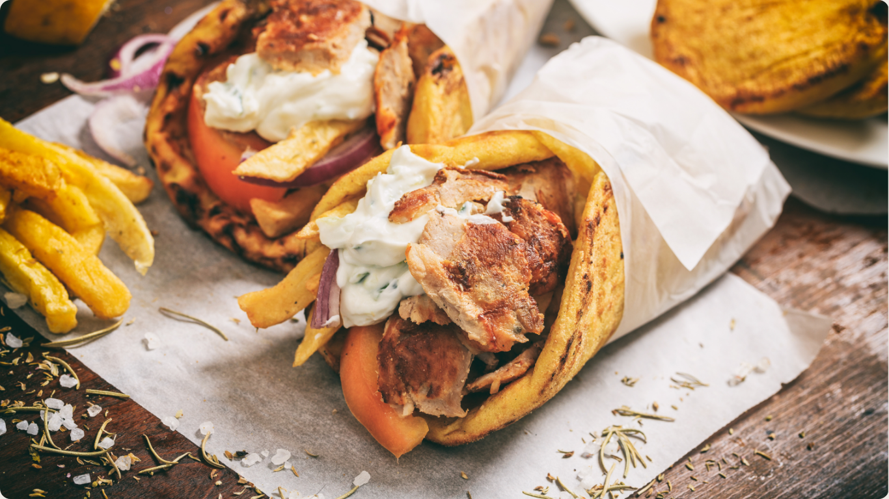

Shawarma

Description
Juicy, seasoned meat wrapped in warm pita bread, bursting with Middle
Eastern spices and topped with creamy sauce. It's a spicy sensation you
won't want to miss!
Ingredients
- Chicken or beef strips
- Shawarma seasoning (cumin, paprika, garlic powder, cinnamon, cayenne
pepper)
- Pita bread
- Lettuce
- Tomatoes
- Onions
- Tahini sauce or garlic yogurt sauce
Steps
- Marinate the chicken or beef strips in shawarma seasoning for at least
30 minutes.
- Cook the marinated meat in a skillet until fully cooked and slightly
charred.
- Warm the pita bread in the oven or on a skillet.
- Fill each pita with lettuce, tomatoes, onions, and the cooked shawarma
meat.
- Drizzle with tahini sauce or garlic yogurt sauce.
Back To Home